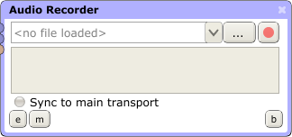

Audio Recorder Processor

The Audio Recorder processor is designed to let you record audio to a stereo .wav file. The controls are as follows:
This is used to choose a file to record the processor's input to. Note the drop-down button, which can be used to select a file previously recorded to.

Starts and stops recording. Note that when recording stops, the recorded sound file will be unloaded from the processor. This is to ensure you don't accidentally record over a previous recording.
As with the File Player processor, this links the Recorder's record/stop button to the app's main transport. If it is toggled on, the Recorder will start recording when the main transport Play button is hit, and stop recording when it is hit for a second time.